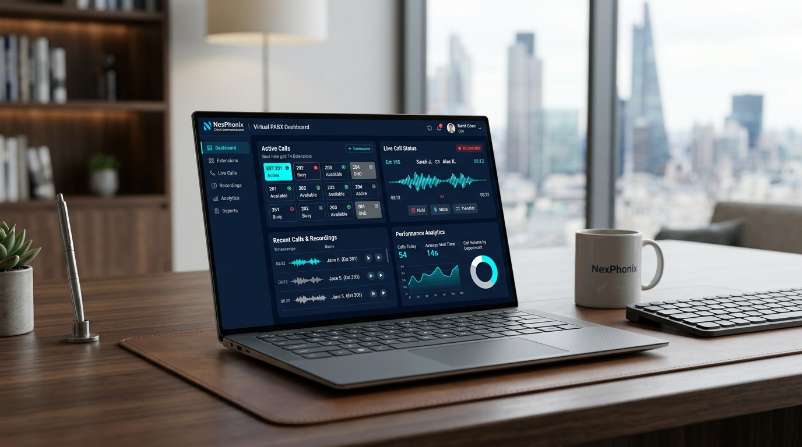

Telefonia Empresarial Inteligente e Soluções de TI para sua Empresa
Modernize seu atendimento com PABX Virtual em nuvem, Telefonia VoIP de alta estabilidade e gestão completa de TI. Reduza em até 70% os custos de telefonia mantendo seu número atual sem nenhuma pausa.

Por que empresas em todo o Brasil escolhem a Sysmax?
Eliminamos os vícios das operadoras tradicionais com uma abordagem transparente, tecnologia estável e foco total no crescimento do seu negócio.
Zero Fidelidade Abusiva
Acreditamos na qualidade do nosso serviço. Você tem liberdade para evoluir sem contratos engessados.
Ativação Rápida em até 24h
Implantação ágil sem burocracia para sua empresa não perder nenhum dia de negócios.
Economia Real de até 70%
Corte custos de manutenção de centrais físicas, taxas abusivas de linhas fixas e chamadas interurbanas.
Suporte Humanizado Direto
Atendimento ágil por especialistas reais via WhatsApp e telefone, sem robôs intermináveis.
Portabilidade Transparente
Traga seu número atual de qualquer operadora sem perder chamadas durante a transição.
Alta Disponibilidade (SLA 99.9%)
Servidores redundantes em data centers de primeira linha com qualidade de voz em Alta Definição (HD Voice).
Soluções completas de Telefonia Corporativa e TI
Do ramal virtual na nuvem à estruturação física da sua rede de computadores, a Sysmax entrega tudo o que sua empresa precisa para se comunicar sem falhas.
PABX Virtual em Nuvem
Elimine centrais físicas com ramais integrados no computador, smartphone ou aparelho IP.
Telefonia VoIP Corporativa
Linhas digitais com alta definição de áudio e planos de chamadas ilimitadas para todo o Brasil.
Portabilidade Numérica
Traga seu número fixo ou 0800 atual de qualquer operadora sem nenhuma pausa no atendimento.
URA e Atendimento Automático
Menu de voz profissional ("Disque 1 para Comercial, 2 para Suporte") com distribuição ágil.
Gravação de Chamadas em Nuvem
Auditoria e conformidade jurídica com histórico completo e busca fácil de gravações.
Números Virtuais (DID) e 0800
Tenha presença local com DDDs de diversas cidades do país e número 0800 nacional sem taxa abusiva.
Integração com WhatsApp & CRM
Conecte sua telefonia ao WhatsApp Business e aos principais CRMs e sistemas do mercado.
Help Desk de TI Especializado
Gestão preventiva e corretiva para computadores, servidores, antivírus e suporte aos colaboradores.
Infraestrutura de Redes e Wi-Fi
Cabeamento estruturado de alto padrão, switches gerenciáveis e redes Wi-Fi corporativas estáveis.
Como a Sysmax transforma a comunicação da sua empresa
Eliminamos os gargalos diários que atrasam seus colaboradores e frustram seus clientes, substituindo improvisos por soluções de alta confiabilidade.
Redução de Dificuldades Operacionais
Diga adeus a centrais físicas obsoletas e manutenções caras
- ✕Aparelhos PABX antigos travando e gerando custos constantes de visita técnica
- ✕Fiação emaranhada e dificuldade para mudar colaboradores de mesa ou sala
- ✕Clientes reclamando de linha ocupada ou ligação caindo ao transferir
- ✕Contas de telefone com cobranças surpresa e tarifas abusivas
- PABX 100% em Nuvem: dispense equipamentos pesados e fiação física
- Crie ou altere ramais em segundos pelo navegador com total autonomia
- Chamadas simultâneas ilimitadas sem sinal de linha ocupada
- Fatura fixa e previsível com redução de até 70% nos custos mensais
Melhoria Radical no Atendimento ao Cliente
Comunicação profissional que transmite credibilidade e fecha vendas
- ✕Ligações perdidas fora do horário ou quando a recepção está ocupada
- ✕Atendentes presos à mesa do escritório, sem mobilidade para trabalho híbrido
- ✕Falta de histórico: sem gravações de chamadas para resolver dúvidas com clientes
- ✕Atendimento desorganizado que faz o cliente repetir a mesma história 3 vezes
- URA Inteligente que distribui ligações para o setor certo automaticamente
- Ramal no smartphone (iOS e Android): atenda de qualquer lugar como se estivesse na empresa
- Gravação de 100% das chamadas em nuvem com conformidade à LGPD
- Filas de atendimento com métricas de tempo de espera e relatórios de desempenho
Infraestrutura Tecnológica Organizada e Estável
Ponto único de contato para telefonia, redes e computadores
- ✕Jogo de empurra: a operadora culpa a internet, o técnico de TI culpa a telefonia
- ✕Rede Wi-Fi oscilando e computadores lentos prejudicando o faturamento
- ✕Vulnerabilidades de segurança e falta de rotina profissional de backup
- ✕Tempo precioso da diretoria gasto resolvendo problemas básicos de suporte
- Um único parceiro especializado para cuidar da telefonia e de toda a TI
- Cabeamento estruturado e Wi-Fi corporativo de alta densidade sem quedas
- Help Desk ágil e preventivo para manter os computadores da equipe sempre operantes
- Mais tranquilidade e foco exclusivo no crescimento do seu negócio
Calcule quanto sua empresa pode economizar
Selecione a quantidade de colaboradores que precisam de ramal telefônico e veja a estimativa de redução de custos com o PABX Virtual Sysmax.
Como funciona a implantação na Sysmax
Esqueça os processos demorados e burocráticos das operadoras convencionais. Na Sysmax sua empresa começa a usar telefonia moderna de forma rápida e segura.
Diagnóstico e Consultoria Gratuita
Nossa equipe de engenharia analisa sua conta atual, rotinas de atendimento, quantidade de ramais e infraestrutura de internet sem qualquer custo ou compromisso.
Proposta Comercial Personalizada
Formatamos uma solução sob medida para sua empresa com valores previsíveis, recursos ideais para o seu fluxo e zero taxas ocultas.
Configuração & Portabilidade Transparente
Parametrizamos sua URA, filas de atendimento, ramais no aplicativo ou IP e realizamos a portabilidade numérica do seu número fixo sem nenhuma interrupção nas chamadas.
Treinamento & Suporte Dedicado
Orientamos sua equipe sobre a utilização dos ramais no PC e celular, realizamos os testes finais e deixamos nosso suporte técnico humanizado à sua disposição.
Em Conformidade Regulatória
Rotas de terminação de alta fidelidade homologadas e em total conformidade com a Anatel.
Privacidade & LGPD
Armazenamento seguro de gravações com criptografia ponta a ponta e controle estrito de acessos.
Data Centers de Alta Confiabilidade
Infraestrutura redundante em nuvem com alta disponibilidade de 99,9% SLA e baixa latência.
Suporte Técnico Humanizado
Equipe própria no Distrito Federal com atendimento imediato via WhatsApp e central telefônica.
Casos de sucesso na prática corporativa
Veja como empresas de diferentes setores modernizaram sua rotina e reduziram custos operacionais com a Sysmax.
"Zero chamadas perdidas e mobilidade total para a equipe jurídica atender de qualquer tribunal ou escritório."
"Redução de 65% no tempo de espera do paciente e capacidade para atender 10 ligações simultâneas no mesmo número."
"Economia comprovada de 62% nas despesas mensais de telecomunicação e controle total das gravações comerciais."
Perguntas Frequentes
Respostas claras e diretas sobre tecnologia VoIP, portabilidade, aparelhos e suporte.
Ainda tem alguma dúvida específica para sua empresa?
Fale diretamente com um consultor da Sysmax pelo WhatsApp agora mesmo.
Pronto para modernizar a comunicação da sua empresa?
Preencha o formulário e receba um diagnóstico sem compromisso em até 30 minutos ou fale diretamente com nossos consultores técnicos.
Seus dados comerciais nunca serão compartilhados com terceiros nem usados para spam.